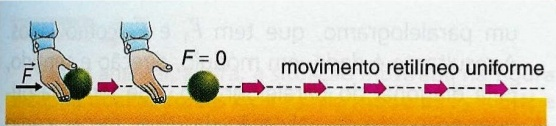

Primeira Lei de Newton
Causa do movimento segundo Aristóteles
Se você empurrar este livro sobre ujma mesa, perceberá que ele só se movimenta enquanquanto você estiver exercendo uma força sobre ele. Se deixar de empurrá-lo, ele vai parar quase instantaneamente. Observações como esta levaram o grande filósofo grego a estabelecer a seguinte conclusão: "Um corpo só pode permanecer em movimento se existir uma força atuando sobre ele."
Esta interpretação de Aristóteles, formulada no século IV a.C.,foi aceitaaté a época do Renascimento (século XVII).
As ideias revolucionárias de Galileu sobre o movimento
Galileu acreditava que qualquer estudo sobre o comportamento da natureza deveria ter por base experiências cuidadosas. Realizando, então, uma série de experiências com corpos em movimento, ele concluiu, por exemplo que sobre o livro que é empurrado em uma mesa atua também uma força de atrito, que tende sempre a contrariar o seu movimento. Assim, de acordo com Galileu, se não houvesse atrito o livro não houvesse atrito o livro não pararia quando cessase o empurrão, ao contrário do que pensava Aristóteles. As conclusões de Galileu estão sintetizadas a seguir:
Se um corpo estiver em repouso, é necessária a ação de uma força sobre ele para colocá-lo em movimento. Uma vez iniciado o movimento, cessando a ação das forças, o corpo continuará a se mover indefinidamente em linha reta, com velocidade constante.
Inércia
Várias experiências do seu cotidiano comprovam as afirmações de Galileu. Assim, temos:
- se um corpo está em repouso, ele tende a continuar em repouso.
- se um corpo está em movimento ele tende a continuar em movimento retilíneo uniforme. Como podemos observar :

A primeira lei de Newton
Vários anos após Galileu ter estabelecido o conceito de inércia, Isaac Newton, ao formular as leis básicas da mecânica, conhecidas como "as três leis de Newton", concordou com as conclusões de Galileu e usou-as no enunciado de sua primeira lei:
Na ausência de forças, um corpo em repouso continua em repouso, um corpo em movimento continua em movimento em linha reta e com velocidade constante
Logo Galileu e Newton perceberam que um corpo pode estar em movimento sem que nenhuma força atue sobre ele.